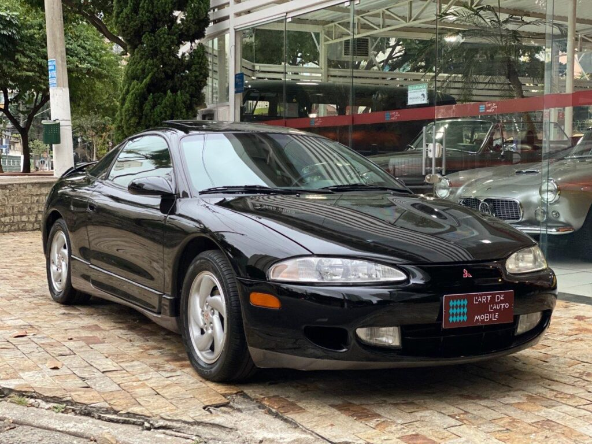
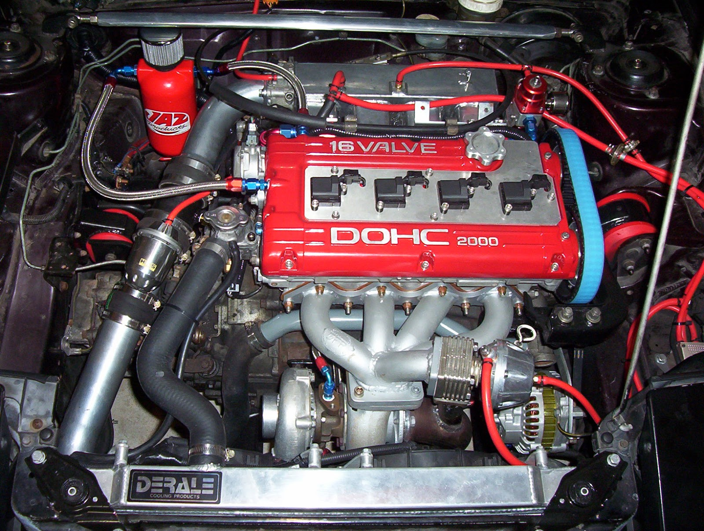
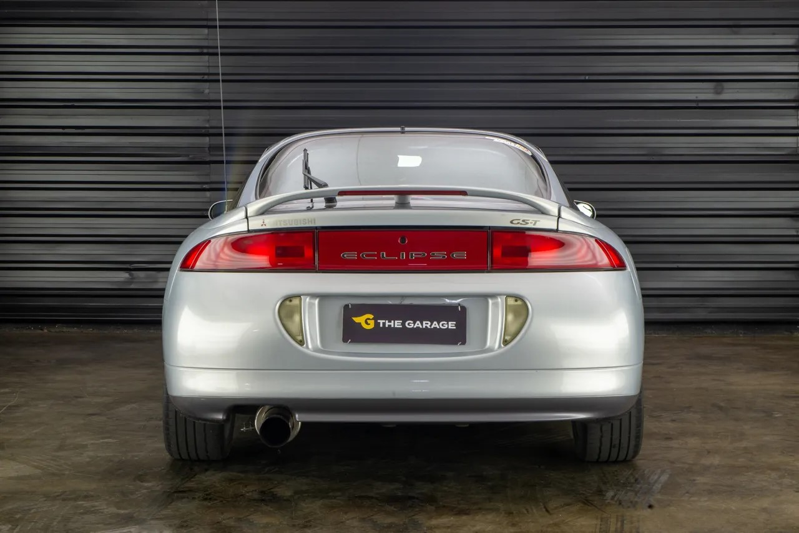
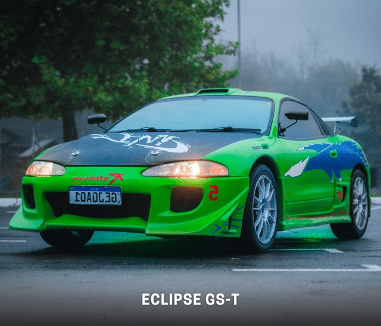
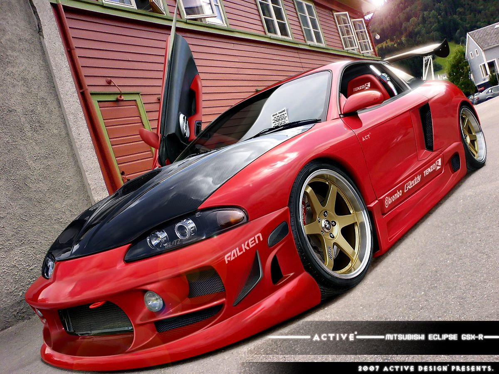

Eclipse
O Mitsubishi Eclipse de 1990 foi um modelo inaugural da linha Eclipse e marcou o início de uma colaboração notável entre a Mitsubishi e as marcas norte-americanas Chrysler e Eagle. Este modelo é importante tanto por seu design inovador quanto por seu impacto no mercado de carros esportivos compactos da época. Aqui está um resumo sobre o Mitsubishi Eclipse de 1990:

Contexto de Produção
Lançamento: O Mitsubishi Eclipse de 1990 foi o primeiro da linha, inaugurando uma nova era de carros esportivos compactos. O modelo foi produzido até 1994 como parte da primeira geração do Eclipse. Parceria: O Eclipse foi resultado de uma joint venture entre Mitsubishi e Chrysler/Eagle. Esse modelo também foi oferecido sob os nomes Eagle Talon e Plymouth Laser, o que refletia a estratégia de marketing para atingir diferentes segmentos de mercado.
Motorização e Desempenho
Motorização: Eclipse GS: Equipado com um motor 1.8L SOHC (Single Overhead Cam) de 92 cavalos de potência. Este motor proporcionava um desempenho moderado adequado para um carro esportivo compacto da época. Eclipse GS DOHC: Versão com motor 1.8L DOHC (Double Overhead Cam) com aproximadamente 135 cavalos de potência, oferecendo uma performance mais esportiva em comparação com o GS padrão. Eclipse GSX: A versão mais potente e avançada, com um motor 1.8L DOHC turboalimentado que produzia cerca de 190 cavalos de potência. O GSX vinha com tração integral (AWD) e foi projetado para oferecer um desempenho superior, especialmente em condições adversas. Transmissão: O Eclipse de 1990 oferecia transmissões manuais de 5 marchas e automáticas de 4 marchas, dependendo da versão e do mercado.
Design e Estilo
Design Exterior: O design do Eclipse de 1990 apresentava linhas agressivas e um estilo esportivo, característico dos carros compactos da época. A aparência geral era moderna e atraente para o público jovem e entusiasta de esportivos. Interior: O interior do Eclipse era focado em esportividade e conforto básico. Contava com assentos com bom suporte lateral e um painel de instrumentos voltado para o motorista. Alguns modelos incluíam ar-condicionado e sistema de som. Equipamentos de Segurança: Equipado com os recursos de segurança típicos da época, como cintos de segurança e freios a disco em todas as rodas.
Polpularidade e Cultura
Impacto Cultural: O Mitsubishi Eclipse rapidamente ganhou popularidade entre entusiastas de carros esportivos e se tornou um ícone no segmento de esportivos compactos dos anos 90. Sua versão turboalimentada, o GSX, especialmente, foi elogiada por sua performance e potencial para modificações. Modificações e Tuning: O Eclipse de 1990, particularmente a versão GSX, tornou-se uma plataforma popular para modificações e tuning. Muitas pessoas personalizaram seus veículos para melhorar o desempenho e a estética, o que ajudou a construir uma comunidade de entusiastas em torno do modelo.
O Mitsubishi Eclipse de 1990 foi um marco importante no segmento de esportivos compactos, oferecendo uma combinação atraente de estilo, desempenho e acessibilidade. Sua colaboração com Chrysler e Eagle, juntamente com a introdução de versões como o GSX, ajudou a estabelecer o Eclipse como um favorito entre os entusiastas de carros esportivos da época. O modelo continua a ser apreciado por sua importância histórica e por sua contribuição para a cultura dos carros esportivos dos anos 90.
